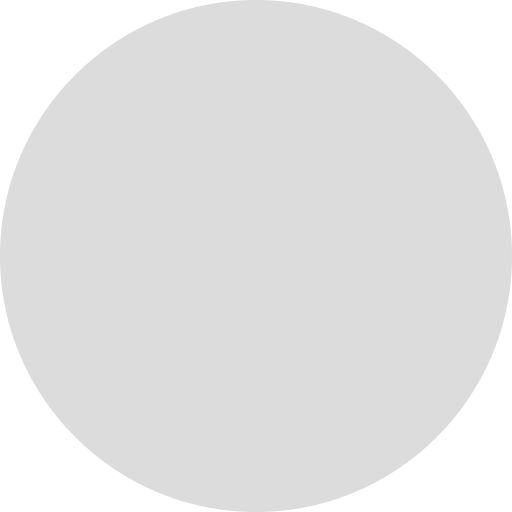

Customer Service Representative
San Francisco, CA  Preview this post
3,154applicants
1,546interviews
912forwards


| job description |  edit edit |
|---|---|
| position title | Customer Service Representative |
| location | San Francisco, CA |
| employment type | Full-time |
| experience | Mid-level |
| Status | Open |
| description | Pastry wafer lollipop powder brownie dragée candy. Sweet icing cotton candy candy canes fruitcake jujubes. Chocolate cake icing carrot cake brownie topping gummi bears. Chupa chups icing marzipan. |
| hiring lead | |
| approved salary | $95,000 |
Link to this Job
Fleeing from the Cylon the Battlestar Galactica leads a rag-tag fugitive fleet on a lonely quest.
Use the Button Widget
This widget embeds the buttons for sharing a job for submitting a resume on your website.
Upload Resumes by Email
You can automatically upload multiple resumes to this job by emailing the address below.